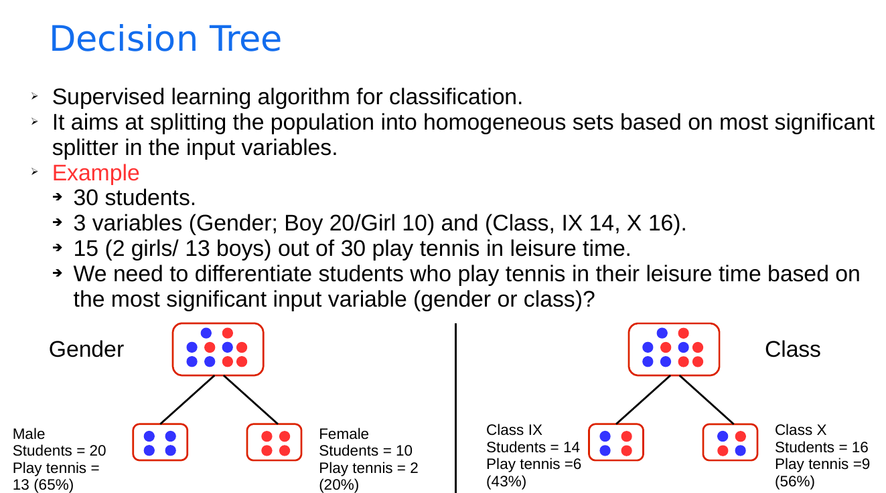

Image Use Case¶
The objective of this use case is to familiraize the participants with the unstructrued datasets (image data).
Dataset Preparation¶
To prepare the dataset, follow these steps:
Download Sentinel-2 images from Google Cloud Storage using the Google Cloud Storage download notebook.
Preprocess the downloaded images using the Sentinel-2 preprocessing notebook.
Rasterize the shapefile containing the training labels using the rasterization notebook.
Data Inspection, Visualization and Preprocessing¶
Data Inspection¶
This step is mandatory in all machine learning experiments. It allows discovering the dataset characterstics, its errors such as missing data in order to be correctly processed. It also allows exploring other properties of the data such as the distribution.
Data Preprocessing¶
Normalization
Normalization is a preprocessing steps that must be applied (in most cases) to datasets before using any machine learning algorithm. The objective of the different normalization stratigies is to bring all features in a dataset to common scales.
Standarization

Min Max scaling
In this use case, we will use the Min Max scaling technique in order to normalize our datatset.
Missing data
Inpainting: In art, this process aims at conserving artworks that are damaged or deteriorating. It is performed by a trained art conservator who carefully studied the artwork to determine the missing pieces. In this exercise, we will be using OpenCV* to perform the image inpainting. In this library, two inpainting techniques are implemented, cv.INPAINT_TELEA* and cv.INPAINT_NS* inspired from fluid dynamics.
*Figure from * *
Unsupervised Object-Based Segmentation¶
Unsuperivsed object-based segmentation (also known as super-pixel segmentation) techniques use spectral (as in classical pixel-based techniques) and spatial information such as shape, texture, spatial connexity in an image to group similar pixels. Multiple algorithms have been developed for this problem such as Felzenszwalb’s efficient graph* *, Quickshift* * and SLIC* * algorithms.
*Figure from * *
In this use case, we will use the Felzenszwalb algorithm. It is a graph-based algorithm that sees every pixel in an image as a vertex in the graph and edges connect these vertices. Hence, the semgnetation reduces to finding communites in the vertices. Boundaries are used to separate communities of pixels. A bounday is where similarity ends and dissimilarity begins. The method uses a predicate function to measure the dissimiarlity between two components. At the first step of the algorithm, each pixel (vertex) represents a component. Then, the predicate function is used to aggregate similar components where edges between vertices in the same component have low weights and higher weight between vertices in different components.
Supervised Pixel-Wise Classification¶

Model Hyperparameter Estimation (Grid Search vs. Random Search)¶
Grid search* is an exahstive method to set the hyperparameters of a machine learning model. In this technique, a set of ranges for the hyperparameters are selected by the practicioner. The method then examines every possible combination before selecting the best one. On the other hand, random search* selects random combinations from the input ranges to be tested and validated.
Supervised DL-Based Regression¶
The LAI is a biophysical parameter that measures the total area of leaves per unit ground area and is directly correlated with the amount of intercepted light by the plant. This parameter has many uses such as the prediction of photosynthetic primary production, monitoring crop growth and yield estimation. Moreover, the LAI is required by many global models of climate, ecosystem productivity and ecology.
The existing methods are too complex and take a long time for inference (physical inversion models). No operational models exist to estimate the LAI of Sentinel-2 products as in the MODIS LAI products.
With DL we can obtain LAI values similar to those obtained by SNAP but in around 17 seconds compared to 15 mins by SNAP.
Training and testing tiles
Training dates
Testing dates
UNet architecture
Training procedure
Inference procedure
Estimation of LAI values for Sentinel-2 images of the T30TYM tile
Visualization of SNAP vs. UNet performance
Visualization of SNAP vs. UNet performance
Visualization of SNAP vs. UNet performance on spring crops

Visualization of SNAP vs. UNet performance on winter crops
Visualization of SNAP vs. UNet performance on summer crops
Visualization of SNAP vs. UNet performance on permanent crops
Comparison with SNAP
References Use Case 2¶
* https://docs.opencv.org/master/df/d3d/tutorial_py_inpainting.html
* Telea, Alexandru. “An image inpainting technique based on the fast marching method.” Journal of graphics tools 9.1 (2004): 23-34.
* Bertalmio, Marcelo, Andrea L. Bertozzi, and Guillermo Sapiro. “Navier-stokes, fluid dynamics, and image and video inpainting.” In Computer Vision and Pattern Recognition, 2001. CVPR 2001. Proceedings of the 2001 IEEE Computer Society Conference on, vol. 1, pp. I-355. IEEE, 2001.
* Efficient graph-based image segmentation, Felzenszwalb, P.F. and Huttenlocher, D.P. International Journal of Computer Vision, 2004.
* Quick shift and kernel methods for mode seeking, Vedaldi, A. and Soatto, S. European Conference on Computer Vision, 2008.
* Radhakrishna Achanta, Appu Shaji, Kevin Smith, Aurelien Lucchi, Pascal Fua, and Sabine Suesstrunk, SLIC Superpixels Compared to State-of-the-art Superpixel Methods, TPAMI, May 2012.
* https://scikit-image.org/docs/0.12.x/auto_examples/segmentation/plot_segmentations.html
* https://scikit-learn.org/stable/modules/generated/sklearn.model_selection.RandomizedSearchCV.html
* https://scikit-learn.org/stable/modules/generated/sklearn.model_selection.GridSearchCV.html